It provides the best printable files.
It's also a platform for the funding and development of new 3DP projects.
Its models are generated by OpenJSCAD, a scipt-based 3D modeling platform.
Unlike ordinary model sharing sites, you don't have to download from a FTP server, which might give you a 404 error from time to time.
The foundry X has a unique mechanism of developing new models.
It allows the user community to decide what to develop.
Foundry X forges the tools that aid your business in 3D printing industry.
Why you should subscribe to this service?
1.Imagine that you are following a cool 3DP project, like modular drones, and you sponsor the author regularly, but suddenly he gets busy and has to stop the project....
On Foundry X, the project you subscribed will be activly updated.
Foundry X hires a team of developers who are paid on regular bases to maintain and improve its projects.
Even if the original developer leaves the team, the project still keeps going as long as it is subscribed
2.Your subscription will bring you unlimited combination of models, instead of one.
Powered by script-based modeling, the Foundry X offers you a powerful system which generates customizable model.
By changing the parameters(length, height, et cetera) of a model, you are able to create different versions of the same product.
In Foundry X, you don't have to pay for a "version 2".
3.You want to increase your revenue, but find it difficult to get new cases...
Instead of passively waiting for customers to drop an order to print their models, you will have your own unique goods.
Take 3D printed music box, for example.
By subscribing this project, you are able to create music boxes with customizable song and shape.
Now you can advertise your business with this specific type of product instead of abstractly saying: I'll print out what you have.
4.Diverge the cost of Developing new projects.
It's quite difficult for small business owners to make their own projet.
This costs a lot of time and money to make a new 3DP project. And such cost will not guarantee this product to succeed in the market.
However, in the user forum of Foundry X you are allowed to launch a new project without the need to pay all the costs by yourself.
The unique process of crowd-funded development will converge resources from all users who approves your vision.
This mechanism also detects bugs and flaws in the prject in early stage.
How does it work?
1.Script-based modeling: One script, infinite possibility！
The 3D modeling engine of Foundry X is OpenJSCAD.
Unlike traditional CAD softwares, it is operated in a browser.
It can generate different printable files of the same kind by adjusting parameters. You can find many examples in my gallery go to gallery
And Jscad has more advantages include:
A.It's very to learn and use.
You can make the model you want without memorizing complicated commands. Just point and click and it's all done!
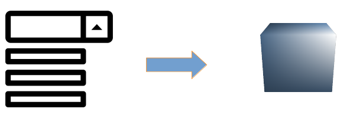
B.As long as there's a supported browser, you can run it on any device and no instilation is required.
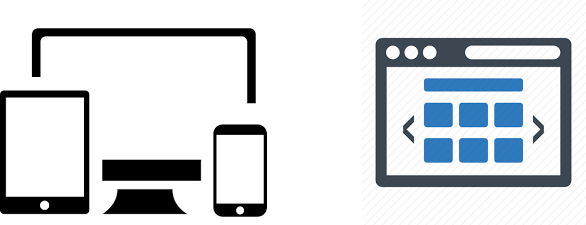
C.The number of devices to access this service is unlimited. You only have to log in to your account.
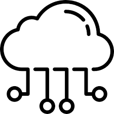
D.Foundry X is not traditional file-sharing site with FTP servers. It will not give you 404 error from time to time.
The models are generated in your device.
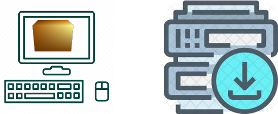
2.Crowd-funded development： The service of Foundry X evolves through the power of its users
A. You think the script/service you subscribe can be better?
You can launch a pull request in the user forum by describing why and how to achive this.
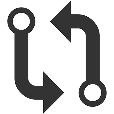
B. What if you got a cool idea that will definitely make profit, but your modeling technique is not good enough?
Just launch a project proposal in the user forum and introduce your idea/design in detail.
C. Those requests and proposals will be voted by other users in the forum.
And the develop team will accept those with highest votes monthly and start working on these requests/proposals.
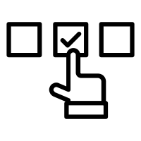
D. Every subscribers of Foundry X will get X points which is corresponded to the money they've paid.
It can be used in user forum. When you find any request/proposal you like, you can spend it to increase their vote couts.
E. A good idea or prject will not always win approval from everyone.
Its content might also be incomplete.
Through discussion with other users, the proposer can make his project more practical and feasible.
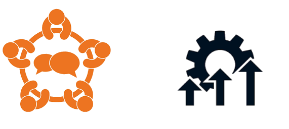
F. Wha to do if you find a request/proposal of your liking but you've spent all your X points?
Just buy more points!
G. The purpose of Foundry X is to forge money-making tools for our clients.
It requires funding to maintain its services and develop new projects.
To those who are willing to pay extra moeny to support us, we are glad to give more power to them.
Every point spent on voting represents users' investment in Foundry X and their expectation to its future
H. 3D printing industry is extremely complicated.
One can only observe a fraction of this vast and ever-changing market.
It's just like the story of "Blind men and an elephant".
However, through the process of discussion and voting, users can uncover the true face of this market and find out what it wants.
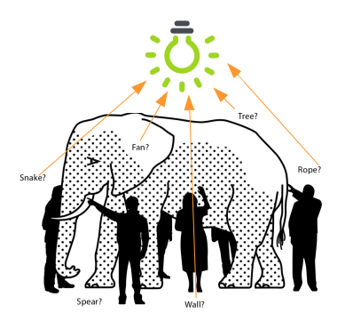
I. Users will guide Foudry X through this repeated process to meet the market's need.
And they can upgrade their own business and build up unique skill trees.
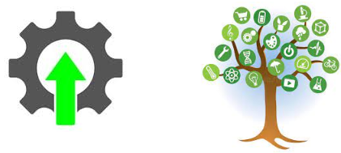
J. In return, Foundry X can not only get the funding it needs but also a group of users who always improves themselves.
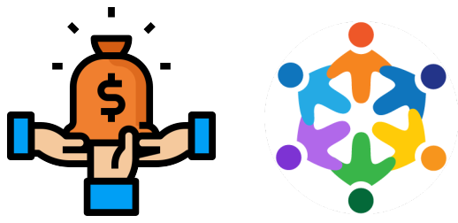
Site map
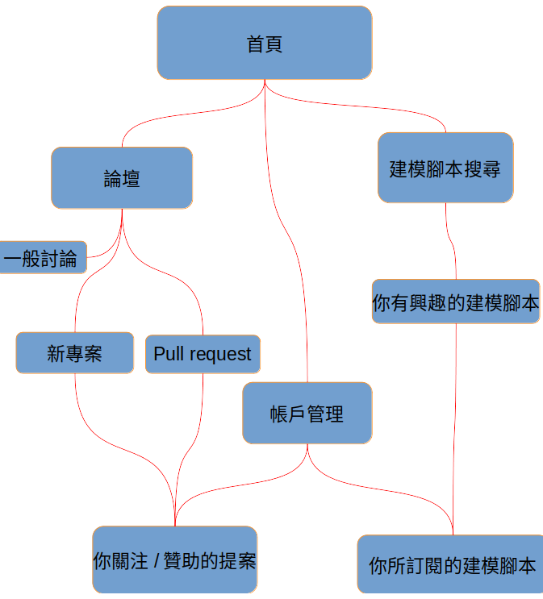
Foundry X is still in early development
If you are interested in this project or got some ideas about it,
Please join our Facebook at: